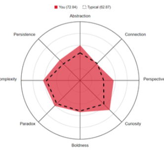

Personality Test
Preferred learning style is Visual
Creativity score = 72.84
My learning style was exactly what I expected as I prefer visual learning. I Find visual learning much more memorable than any other learning style, as if taking a picture of what I’ve seen and storing it within my memories, just like a camera. With group projects, coming up with unique ideas is a must, ensuring individuality amongst the many other ideas from other groups. Without creativity, humanity wouldn’t have come so far. When forming a group for a project, creativity is required in order for different ideas to flow around, allowing for better collaboration.
